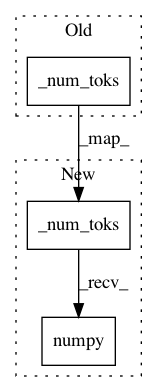

8648d437573e2e41b92b8fea13b4afe5e01851e8,baseline/tf/seq2seq/training/eager.py,Seq2SeqTrainerEagerTf,test,#Seq2SeqTrainerEagerTf#Any#Any#Any#Any#,157
Before Change
features["dst"] = tgt[:, :-1]
top_preds = self.model.predict(features, beam=1)
loss_value = loss(self.model, features, tgt).numpy()
toks = self._num_toks(features["tgt_len"])
total_loss += loss_value * toks
total_toks += toks
preds.extend(convert_seq2seq_preds(top_preds[:, 0, :], self.tgt_rlut))
golds.extend(convert_seq2seq_golds(tgt, features["tgt_len"], self.tgt_rlut))
After Change
features["dst"] = tgt[:, :-1]
top_preds = self.model.predict(features, beam=1)
loss_value = loss(self.model, features, tgt).numpy()
toks = tf.cast(self._num_toks(features["tgt_len"]), tf.float32).numpy()
total_loss += loss_value * toks
total_toks += toks
preds.extend(convert_seq2seq_preds(top_preds[:, 0, :], self.tgt_rlut))
golds.extend(convert_seq2seq_golds(tgt, features["tgt_len"], self.tgt_rlut))
In pattern: SUPERPATTERN
Frequency: 3
Non-data size: 3
Instances
Project Name: dpressel/mead-baseline
Commit Name: 8648d437573e2e41b92b8fea13b4afe5e01851e8
Time: 2020-04-02
Author: dpressel@gmail.com
File Name: baseline/tf/seq2seq/training/eager.py
Class Name: Seq2SeqTrainerEagerTf
Method Name: test
Project Name: dpressel/mead-baseline
Commit Name: 8648d437573e2e41b92b8fea13b4afe5e01851e8
Time: 2020-04-02
Author: dpressel@gmail.com
File Name: baseline/tf/lm/training/eager.py
Class Name: LanguageModelTrainerEagerTf
Method Name: test
Project Name: dpressel/mead-baseline
Commit Name: ccf28747f4f037d7b7dd38756d291620d4a4ce9b
Time: 2020-04-26
Author: dpressel@gmail.com
File Name: baseline/tf/lm/training/eager.py
Class Name: LanguageModelTrainerEagerTf
Method Name: test